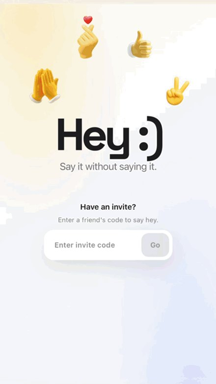
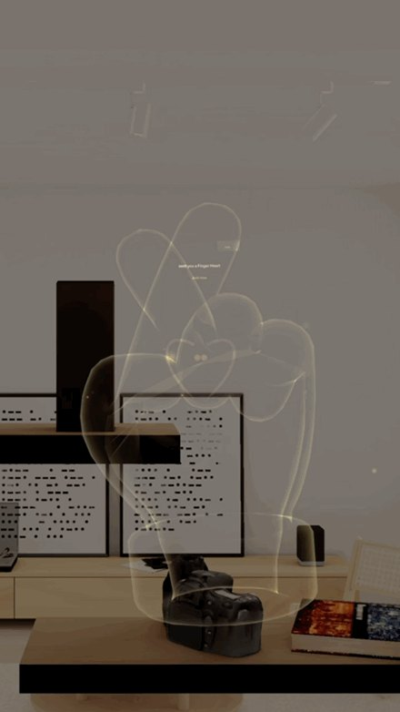
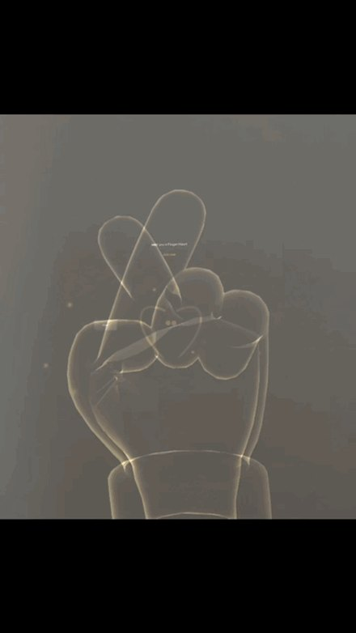
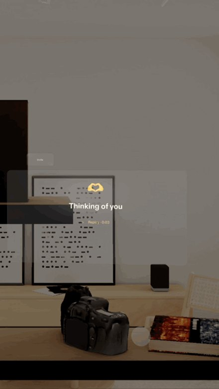
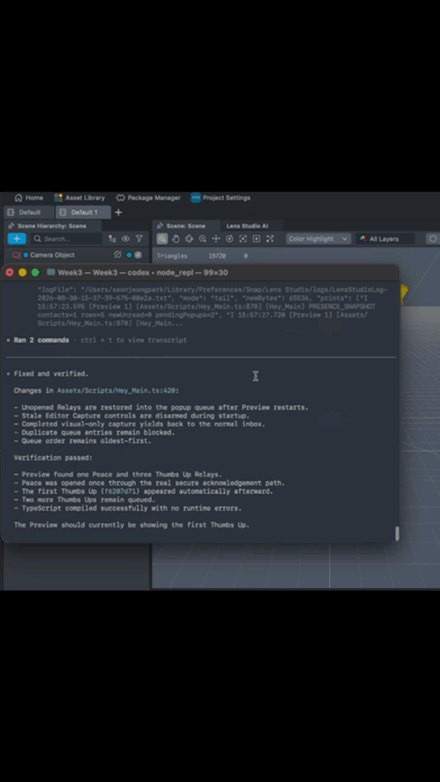

Hey is an asynchronous spatial messaging experience where messages are hidden behind gestures.
Someone sends a High Five, Finger Heart, Peace sign, or Thumbs Up with a text, emoji, or voice note. On Specs, that gesture waits in your space until you physically return it.
You do not tap to open the message. You return the gesture.
Built in one week for Snap Specs using CLAD, with a companion web app, real-time gesture recognition, voice messaging, and a Supabase backend.
The Challenge
Hey was created for Week 3: Connect of the CLAD Summer Hackathon, where it placed 2nd. The challenge was to build a spatial experience that connects people, platforms, or everyday communication workflows.
I used it to explore two questions:
Q. How could messaging become genuinely spatial, rather than simply placing chat UI in AR?
Q. How far could I push CLAD to build a complete cross-platform product?
I was especially interested in physical interactions that disappear when people are far apart. You can message someone on the other side of the world, but you cannot actually give them a High Five.
I wanted to see whether spatial computing could bring back a small part of that feeling, allowing someone to leave a physical gesture behind for another person to meet later.
The Experience
The interaction is built around one simple idea:
“You do not open a message. You return the gesture.”
Send→Wait in space→Return→Reveal→Reply

01. Send
Anyone can join from a browser using the invite code shown on Specs. The sender performs one of four gestures through their webcam and attaches a text, emoji, or short voice note. MediaPipe recognises the gesture locally in the browser.
High Five: celebration or encouragement
Finger Heart: affection or support
Peace: hello, goodbye, or reassurance
Thumbs Up: approval or confidence

02. Wait in space
Each sender has a persistent Presence Token in the Specs wearer’s environment. When a message arrives, a holographic version of the gesture appears beside that person while the actual content remains hidden. The gesture stays there until the receiver responds.

03. Return and reveal
Instead of tapping a notification, the receiver performs the matching gesture. A High Five meets a High Five. A Finger Heart is completed. A Peace sign is matched. A Thumbs Up is returned. Only then does the message reveal.

04. Reply and remember
The receiver can reply with text, emoji, or voice. Once opened, the exchange becomes part of that person’s conversation history, allowing the conversation to continue between the web and Specs. Over time, people, gestures, and memories build up around the wearer.
Designing Messaging for Space
The main interaction-design challenge was deciding what should actually become spatial. I did not want to take a conventional messaging app and simply place its windows in AR. Instead, I focused on three properties that spatial computing could add to communication.
01
Presence
Each sender has a visible place in the receiver’s room, so a message feels connected to that person instead of arriving as an anonymous notification.
02
Persistence
A sent gesture remains in the room until the receiver is ready. It turns an instant action into something they can physically meet later.
03
Embodied Interaction
The receiver reveals the message by responding with their own body. Reading becomes a shared gesture instead of a tap.
The web and Specs therefore deliberately play different roles. The web makes sending accessible to anyone with a browser. Specs turns receiving into a spatial, embodied interaction.
WEB → SPECS → WEB → SPECS
The goal was not to make messaging three-dimensional. It was to make space and the body part of the communication itself.
Building the System
Hey grew from an interaction experiment into a complete cross-platform prototype spanning Specs, web, computer vision, voice messaging, and backend infrastructure.
Browser ──same-origin──► Next.js API ──server secret──► Supabase
│ ▲
│ local gesture recognition │
└──────────────────────────────────────────────────── Specs
The Lens runs on Specs and was built in Lens Studio. The companion web uses MediaPipe Hand Tracking for local gesture recognition. Next.js provides the protected API layer, while Supabase manages Presence, Relay state, messages, voice notes, and conversation history.
Key technical considerations included:
Keeping webcam frames and hand landmarks inside the browser.
Synchronising Presence, messages, replies, and conversation history across platforms.
Private voice-note storage with expiring playback URLs.
Restricted receiver capabilities for the Specs runtime.
Persistent server-side rate limiting across invite, Presence, Relay, and voice endpoints.

Each iteration was shaped by focused prompts, tested in Preview, and carried forward as a reusable lesson.
Building with CLAD
A second goal of the project was to test how far I could push CLAD as a development tool. CLAD is an AI-assisted development workflow for Lens Studio that can build, preview, debug, and iterate on spatial experiences.
Rather than using it as a one-shot generator, I treated it as a co-developer throughout the entire project.
I would scope one part of the experience, let CLAD implement it, test the real result, identify what was wrong, and use that evidence to guide the next prompt.
What CLAD Helped Me Build
Specs interactions and gesture recognition.
The companion web and Supabase integration.
Messaging and Presence systems.
Shaders, VFX, meshes, and sound effects.
Voice recording and playback.
Runtime debugging and testing.
I also wanted the prompting itself to improve as the project evolved. Whenever an iteration revealed a reusable lesson, I asked CLAD to add it to a living Good Prompt Guide.
Build→Test→Learn→Update Guide→Write a better prompt→Build again
The product and my way of communicating with the AI evolved together. By the end, the questions had evolved too:
Q. Can AI generate this?
Q. How effectively can I direct AI through a complex, evolving product?
Reflection
Living in the UK while the friends and family I love are in Korea made this question personal: how could I send not only information, but also my mood, feelings, and care? I kept thinking about how AR could make someone far away feel present in the same space, even for a moment.
Hey came from that question. Instead of simply placing chat UI in AR, I used space as a place where another person’s gesture could wait. Returning it with your own body creates a brief shared action, something closer to a moment together than a notification.
The project also changed how I approached AI-assisted development. Prompting stopped feeling like a disposable instruction before code generation and became another part of the system that could be designed, tested, documented, and improved.
Hey became an experiment in two things: how communication can become more spatial, and how building software can become more collaborative with AI.